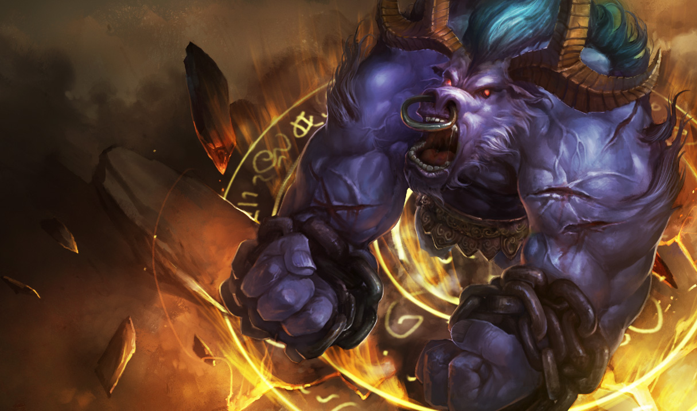

DOCTYPE html>
Alistar,The Minotaur
Alistar
The Minotaur

Alistar is a Tank
his skills are...
- Trample,
This is his passive, Each time Alistar casts a spell, he tramples nearby units and turrets for a few seconds, dealing damage to units he walks over.
- Pulverize
Cost: 65/70/75/80/85 Mana
Range: 365
Alistar smashes the ground, dealing damage to all nearby enemies and tossing them into the air for 1.5 seconds. On landing, enemies are stunned.
Alistar smashes the ground, dealing 60/105/150/195/240 (+50% Ability Power) magic damage and tossing all nearby enemy units into the air, stunning them for 1.5 seconds.
- Headbutt
Cost: 65/70/75/80/85 Mana
Range: 650
Alistar rams a target with his head, dealing damage and knocking the target back.
Alistar charges at an enemy and rams them, dealing 55/110/165/220/275 (+70% Ability Power) magic damage and stunning them while knocking them back.
- Triumphant Roar
Cost: 40/50/60/70/80 Mana
Range: 575
Alistar lets out a commanding war cry, restoring Health to himself and nearby friendly units for half the amount. Can be cast more often if nearby enemies are dying.
Restores 60/90/120/150/180 (+20% Ability Power) Health to Alistar and half as much to nearby allies. Cooldown is reduced by 2 seconds each time a nearby enemy unit dies.
- Unbreakable Will
Cost: 100 Mana
Range: Self
Alistar lets out a wild roar, gaining bonus damage, removing all crowd control effects on himself, and reducing incoming physical and magical damage for the duration.
Removes disables from Alistar, and Alistar gains 60/75/90 Attack Damage and takes 70% reduced physical and magic damage for 7 seconds.